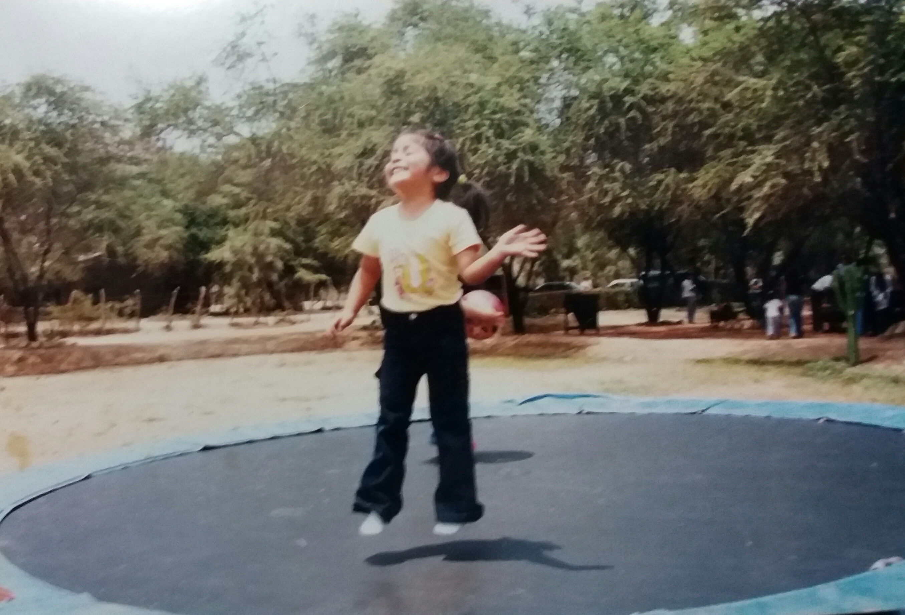

•FABIANNA SANDOVAL VALENZUELA•
Mi historia de vida
Aunque no tengo claros muchos recuerdos de la infancia, Mi familia está conformada por padres, hermanos, mi sobrino y tenemos una mascota a la cual queremos mucho, es una hermosa gatita. Yo soy la menor de 4 hermanos y tía de mi sobrino,
quien tiene 7 años.
Sus nombres son:
- Mamá - Marita Valenzuela
- Papá - Wilfredo Sandoval
- Hermana Mayor - Amy Sandoval
- Hermano Mayor 2 - Anthony Sandoval
- Hermana Mayor 3 - Carolain Sandoval
- Sobrino - Sebastián Romero
Para mí, familia son esas personas a las que necesitas ir cuando quieres sentirte bien. ... Para mí la familia es ese tejido que te sujeta y te cobija.
